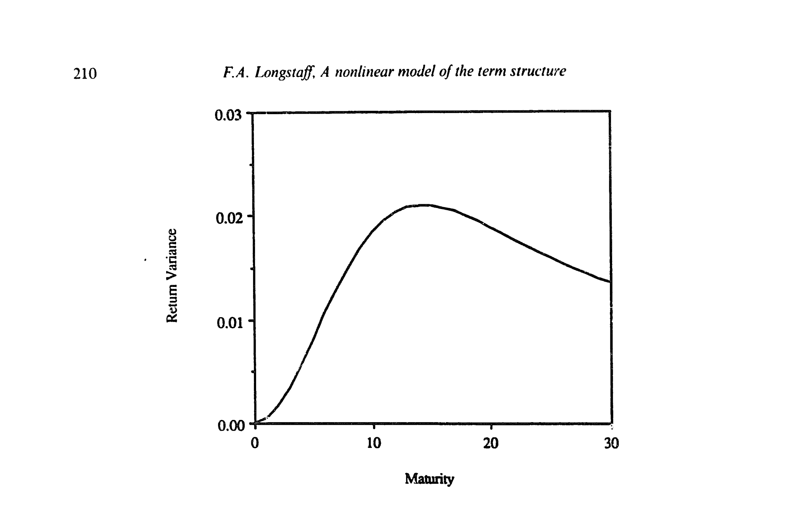
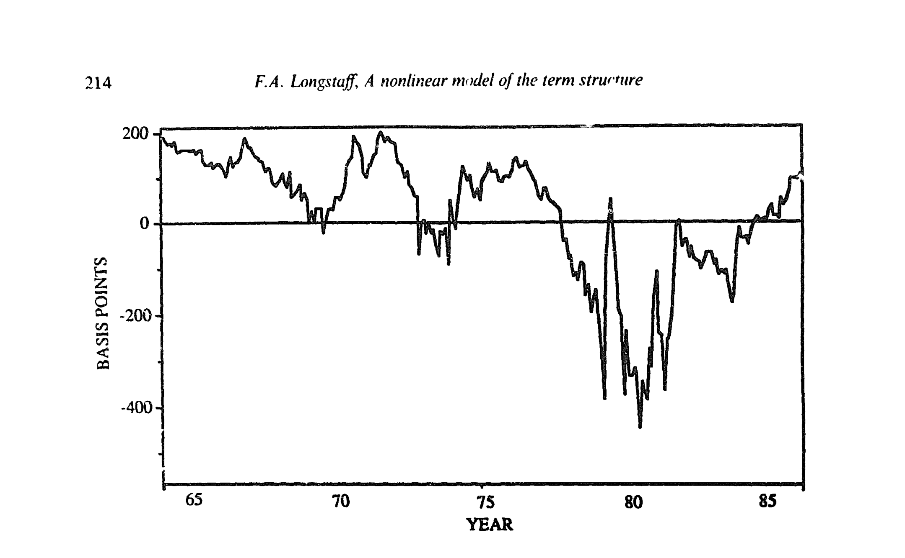
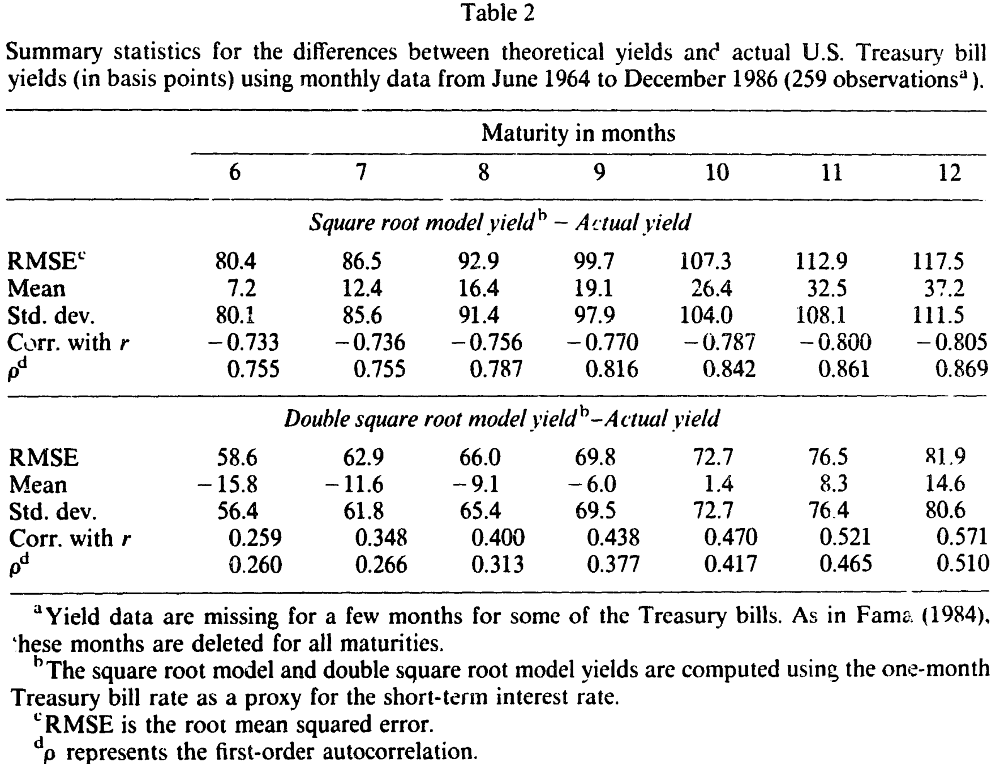
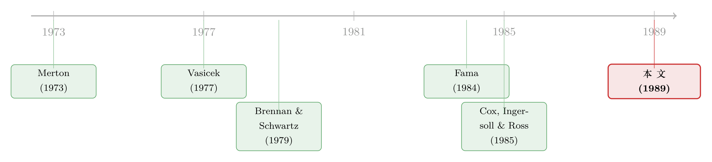

收益率曲线为什么总是「太规矩」？——给利率添上第二个平方根
本文读的是 Longstaff (1989, Journal of Financial Economics)：在 Cox-Ingersoll-Ross 的一般均衡框架里，作者把状态变量从「平方根过程」换成「带漂移的反射布朗运动」，得到一个收益率关于无风险利率非线性的闭式期限结构模型（双平方根模型, DSR）。仅凭这一处非线性，模型就能生出驼峰、波谷等更现实的曲线形状，并且在 1964–1986 年美国国库券数据上，其拟合的均方根误差（如 12 个月期）从平方根模型的 117.5 个基点降到 81.9 个基点。
1 引言：一条「太规矩」的曲线
任何一个做过固定收益的人，心里都有一张收益率曲线的「样子图」：它有时上行、有时下行、有时中间鼓起一个包、有时又先升后降再升。现实里的期限结构，形状是相当任性的。
可问题在于，理论模型常常画不出这种任性。
Cox, Ingersoll, and Ross（下称 CIR）在 1985 年献给学界两份礼物。一份是 CIR (1985a)——一个连续时间的一般均衡（general equilibrium）定价框架，它的妙处在于无风险利率及其动态不是外生硬塞进去的，而是作为均衡的一部分内生决定的。这样一来，那些会引发套利的利率路径就被自动排除在外；而这正是 Vasicek (1977)、Brennan and Schwartz (1979) 这类局部均衡（partial equilibrium）方法没法保证的。（关于债券价格与波动率在这些模型里的符号纠葛，可参见《债券价格和波动率，到底是「正」还是「负」？》。）
另一份礼物是 CIR (1985b)——他们在这个框架下给了一个具体的例子：假设技术冲击的状态变量服从平方根过程，于是利率也服从平方根过程，债券价格有了漂亮的闭式解。这就是大名鼎鼎的平方根模型（square root model, SR）。
礼物很好，但有个遗憾：SR 模型推出的收益率，是无风险利率 \(r\) 的线性函数。线性意味着规矩——它能给的形状很有限：要么单调上行，要么一个驼峰，仅此而已。更要命的是，它隐含的期限溢价（term premium）一定是到期期限的单调递增函数。可 Fama (1984) 早就发现，国库券的事前与事后溢价在大约九个月的期限上鼓起了一个包。模型和数据，对不上。
那怎么办？
2 一个自然的念头，和一个更聪明的替代
首先想到的，自然是加状态变量。一个变量画不出复杂形状，那就两个、三个。可这条路代价很大：每加一个状态变量，可解性就差一截，要估的参数也多一堆。性价比很低。
接着，Longstaff 给了一个更直接、也更省的念头：不加变量，只改非线性。
他保留了 CIR (1985a) 框架里几乎所有假设——代表性投资者的对数效用、技术变化由单一状态变量 \(X\) 驱动。唯一改动的，是 \(X\) 的动态。CIR 让 \(X\) 走平方根过程；Longstaff 让它走一个带漂移的反射布朗运动（reflected Brownian motion with drift）：在零以上像随机游走，碰到零就立刻反弹回正值，同时又有一个长期平稳分布。
$$dX = m\,dt + s\,dZ$$
这里 \(m,s\) 为常数（\(m<0\)），\(Z\) 是标准维纳过程。为什么是这样一个过程？因为它「短期像随机游走、长期又向中枢回归」——(log) 股价在短期内就像带漂移的随机游走 [Fama (1976)]，长期却有平稳成分 [Fama and French (1988)]。这是对很多经济变量行为的合理刻画。
然后，关键的一步：和 CIR 一样，均衡里无风险利率正比于状态变量方差，于是
$$r = cX^2$$
\(c\) 是一个正常数。注意这是平方关系——这就是「double square root」里第二个平方根的来历。
3 模型的核心：那个多出来的 \(\sqrt{r}\)
到这里，剩下的全是数学。对 \(r=cX^2\) 用伊藤引理（Itô's Lemma），把 \(X\) 的动态翻译成 \(r\) 的动态。
我们一步步来。由 \(r=cX^2\)，有 \(\partial r/\partial X = 2cX\)，\(\partial^2 r/\partial X^2 = 2c\)，而 \((dX)^2 = s^2\,dt\)。代入伊藤公式：
$$dr = 2cX\,(m\,dt + s\,dZ) + \tfrac{1}{2}\cdot 2c\cdot s^2\,dt = (2cmX + cs^2)\,dt + 2csX\,dZ$$
再把 \(X=\sqrt{r/c}\) 回代，并令 \(\sigma \equiv 2s\sqrt{c}\)、\(\kappa \equiv -2m\sqrt{c}>0\)，整理就得到 DSR 模型的利率过程：
$$dr = \left(\frac{\sigma^2}{4} - \kappa\sqrt{r}\right)dt + \sigma\sqrt{r}\,dZ$$
这个式子值得停下来看几眼。它和 SR 过程、和 Vasicek、Brennan-Schwartz 一样，是一个被「弹性地拉向中枢」的均值回归过程。但回复力（restoring force）正比于 \(\mu-\sqrt{r}\)，而不是别人那种 \(\mu-r\)——这一处非线性，正是后面所有反直觉结论的源头。它还顺带带来几个性质：扩散系数在 \(r=0\) 处消失，所以负利率被排除；瞬时方差恰好是 \(\sigma^2 r\)，与利率水平直接挂钩；而且只需要两个参数 \(\kappa\) 和 \(\sigma^2\) 就能描述全部动态——因为中枢 \(\mu^2=\sigma^4/16\kappa^2\) 已经被这两个参数锁死了。
但真正关键的一步，在债券定价上。沿用 CIR (1985b) 的基本估值方程，用标准的分离变量法求解，Longstaff 得到贴现债券价格的闭式解：
于是收益率到期收益率（yield to maturity）就是
$$Y(r,\tau) = -\frac{1}{\tau}\Big(\ln A(\tau) + B(\tau)\,r + C(\tau)\sqrt{r}\Big)$$
看到那个 \(C(\tau)\sqrt{r}\) 了吗？正因为它，收益率不再是 \(r\) 的一条直线，而是同时依赖 \(r\) 和 \(\sqrt{r}\) 的曲线。这就是全文反复要讲透的那一个核心：一个 \(\sqrt{r}\)，让收益率曲线挣脱了「线性」的束缚，于是单调、驼峰、先升后平再升、甚至「一个包加一个谷」的形状，统统能被画出来——而代价，只是改了状态变量的设定，没多加一个参数。
4 于是，三个反转出现了
非线性一旦进来，几条教科书里的「常识」就被掀翻了。
第一，债券价格不一定与利率反向变动。 我们都以为利率涨、债券价格必跌（\(P_r<0\)）。可 Longstaff 证明，在 \(r\) 较小时 \(P_r\) 可以为正。这并非数学怪胎，而是均衡的要求：当 \(r\to 0\) 时，必须有 \(P_r>0\)，债券才能挣得均衡的预期回报——否则若强行规定 \(P_r<0\)，下一瞬间 \(r\) 几乎必然上行，债券持有人将稳赔，这与或有权益市场的均衡相悖。\(P_r\) 的正负，以 \(r\) 跨过某个阈值为界翻转。
第二，债券风险不一定随期限单调递增。 SR 模型里期限越长风险越大；DSR 里则未必。瞬时债券收益方差是 \(\sigma^2\big(B^2(\tau)r + B(\tau)C(\tau)\sqrt{r} + C^2(\tau)/4\big)\)，由于这条非线性，收益方差与期限（久期）的关系可以是单调的，也可以出现更复杂的形态——比如下图这种「先升后降再升」的非单调曲线。

Figure 3: Example of a nonmonotonic relation between discount bond return variance and maturity
第三，局部预期假说（local expectations hypothesis, LEH）可以对一部分债券成立、对另一部分不成立。 存在一个特殊期限 \(\tau^*\)，使得该债券在局部上「无风险」：它的扩散项恰好为零，于是
$$\frac{dP}{P} = r\,dt$$
也就是说，持有这只 \(\tau^*\) 期债券，回报与不停滚动瞬时到期债券完全一样——它在 CIR (1980)、Ramaswamy and Sundaresan (1986) 的意义上被「免疫」了。LEH 只对它成立，对别的期限并不成立。
期限溢价也跟着活了过来：它同时依赖期限 \(\tau\) 和利率 \(r\)，可以单调递增，也可以鼓出一个包，甚至在长端转为负值。这恰好对得上 Fama (1984) 关于「九个月驼峰」的发现——而这正是 SR 模型死活给不出来的形状。
5 数据说话：双平方根真的赢了吗
理论再漂亮，也得过实证这一关。
Longstaff 用 Hansen (1982) 的广义矩估计（generalized method of moments, GMM）来估参数。思路很干净：模型对各期限国库券的期望收益率给出解析表达式，把它们令等于样本里的平均收益率，解出参数。对 DSR 模型，用三、四、五个月的国库券平均收益率构成三个方程，解出 \(\kappa\)、\(\sigma^2\) 和市场风险价格 \(\lambda\)。这个办法的好处是：它用的是被时间聚合后的利率过程的真实分布，而非离散近似；估计对条件异方差稳健；并且简单直观。标准误用 Newey and West (1987) 的异方差—自相关一致估计来算。值得一提的是，DSR 模型参数间高度相关，导致标准误偏大——而这会让后续检验偏向于不利于 DSR，是个保守的设定。
数据是 Fama (1984) 构造、后被 CRSP 收录的美国国库券到期收益率，样本 1964 年 6 月到 1986 年 12 月，共 259 个月度观测。
先看两个模型隐含收益率本身差多少。如图 4，SR 与 DSR 对同一只 12 个月国库券给出的收益率，差异可以相当大：研究期内平均绝对差超过 112 个基点，1980–1981 年间更是数次突破 250 个基点。这说明两个模型对均衡利率行为的含义是根本不同的，绝非细枝末节之争。

Figure 4: Difference between the yields implied by the Cox, Ingersoll, and Ross (1985b) Fquare root
那么谁离真相更近？把理论收益率减去实际收益率，看误差的统计量。如表 2 所示，对 6 到 12 个月的各期限，DSR 的均方根误差（RMSE）一律低于 SR：以 12 个月期为例，SR 是 117.5 个基点，DSR 是 81.9 个基点；6 个月期则是 80.4 对 58.6。不仅如此，DSR 的误差与利率水平 \(r\) 的相关性也低得多（DSR 为 0.259–0.571，SR 高达 −0.733–−0.805），一阶自相关也更小（DSR 0.260–0.510，SR 0.755–0.869）。换句话说，DSR 的残差更「干净」——既不那么系统性地随利率水平漂移，也不那么黏。

Table 2
不过 Longstaff 很诚实：两个模型都没有完全捕捉国库券收益率的水平与变动。一个旁证是，当期限从六个月翻倍到十二个月，DSR 的 RMSE 上升了 39.8%，SR 上升了 46.1%——误差随期限稳步放大。把这个趋势外推到更长期限，暗示着像 Brennan and Schwartz (1979) 那样引入一个与期限相关的因子，或许能更好地描述长端；又或者，这些模型在「用与被建模收益率相近期限的数据来估参数」时表现最好。
最后，作者还做了一个不依赖参数估计的检验。SR 模型（以及很多模型）隐含收益率变动线性于 \(\Delta r\)；DSR 则隐含收益率同时线性于 \(\Delta r\) 和 \(\Delta\sqrt{r}\)。于是只要回归
$$\Delta Y_{\tau t} = \delta_0 + \delta_1\Delta r_t + \delta_2\Delta\sqrt{r_t} + \varepsilon_t$$
检验 \(\delta_2=0\) 是否成立即可。结果强烈支持：控制住 \(\Delta r\) 之后，\(\Delta\sqrt{r}\) 对收益率变动仍有显著解释力（六到十二个月各期限上 \(\delta_2\) 的 \(t\) 值多在 1.8–2.7 之间），即利率与收益率确为非线性关系。
6 文献脉络
这条线索的起点，是把利率写成一个均值回归扩散过程的努力。Vasicek (1977) 给出第一个解析的期限结构模型，但它允许负利率；Brennan and Schwartz (1979) 等局部均衡方法则可能隐含负的远期利率。真正的范式转换来自 CIR (1985a)，他们用一般均衡把利率动态内生化，从根上排除了套利；CIR (1985b) 随即给出平方根这个可解的特例。与此同时，Fama (1984) 在数据里发现了期限溢价的「九个月驼峰」，给所有「溢价单调递增」的模型出了一道难题。

Longstaff (1989) 正好站在这个交叉口：他接受 CIR 的一般均衡内核，却用一个反射布朗运动 + 平方关系，把收益率掰成非线性，从而一举容纳了 Fama 的驼峰。后来的故事也很值得一提——这个漂亮的闭式解，其实在边界条件上藏着一处瑕疵，后来被人专门撰文修正（详见《漂亮的闭式解，解的却是另一道题——一桩利率模型的边界条件公案》）。而「利率的漂移到底是不是非线性」这个 Longstaff 点燃的问题，也成了之后二十年的一桩公案（参见《利率会不会「拐弯」？——一个被换了把尺子量出来的老问题》与《利率会拐弯，是数据说的，还是先验替它弯的？》）。非线性这条路的另一支，则通向了二次型期限结构模型（参见《利率为什么「跌不破零」却又能「负相关」——二次型期限结构模型的破局》）。
7 评论与延伸（Q&A + 研究方向）
(a) 几个可能的疑问
Q：DSR 和 CIR 平方根模型到底差在哪？
同一个一般均衡框架、同一个单状态变量、同样的对数效用。唯一的区别是状态变量的动态：CIR 让它走平方根过程，收益率因此线性于 \(r\)；Longstaff 让它走带漂移的反射布朗运动加上 \(r=cX^2\)，收益率因此同时依赖 \(r\) 和 \(\sqrt{r}\)，是非线性的。一处设定之差，换来形状自由度的飞跃。
Q：既然要更丰富的形状，为什么不老老实实加一个状态变量？
因为代价不对等。多加状态变量会显著牺牲可解性、并增加待估参数的数量。Longstaff 的卖点恰恰是「不加变量、不加参数」——非线性是「免费」买来的形状自由度。事实上他还指出，由于收益率是 \(r\) 与 \(\sqrt{r}\) 的线性组合、而两者线性无关，DSR 在某种意义上像一个「两因子」模型，却只用了一个状态变量。
Q：「利率上升、债券价格反而上升」这种反直觉结论，可信吗？
它只在 \(r\) 很小时出现，而且不是 bug 是 feature：在 \(r\to0\) 处，均衡要求 \(P_r>0\)，否则债券拿不到应有的预期回报。强行规定价格处处随利率反向，反而会与或有权益市场的均衡相矛盾。这是「内生定价」对「外生设定」的一次纠偏。
Q：GMM 只拟合一阶矩（平均收益率），这够稳吗？
它的好处是用了温和聚合后利率过程的真实分布，不靠离散近似，且对条件异方差稳健、对某些测量误差也稳健。代价是 DSR 参数间高度相关，标准误偏大。但作者论证，这反而让检验偏向不利于 DSR，所以是个保守而非讨巧的设定。
Q：DSR 的 RMSE 仍有 60–80 个基点，凭什么说它「赢了」？
「赢」是相对意义上的：在每一个期限上 DSR 的 RMSE、误差自相关、与利率水平的相关性都低于 SR。但作者明确承认两者都没完全拟合收益率的水平与变动，误差还随期限放大——这正暗示需要一个与期限相关的额外因子。它是更好的一步，不是终点。
Q：这个闭式解后来出过问题吗？
出过。这个模型在边界条件 / 闭式解的推导上后来被发现有瑕疵，并有专门的「修正与补充」一文加以更正。漂亮的解析式，未必就是对的解析式——这恰恰提醒我们，闭式解的诱惑下要格外小心边界与适定性。
(b) 几个可能的研究问题与提案
1. 非线性短端 → 公司债信用利差的期限结构。 【经济故事】结构化信用模型（违约边界、可赎回）几乎都以某个短端利率过程为输入。如果短端真的非线性于 \(\sqrt{r}\)，那么信用利差的期限结构、以及利差对利率水平的敏感度，都会被重写。【可行性】中。需要 TRACE 公司债成交数据 + 同期国债曲线，把 DSR 短端嵌入一个简约（reduced-form）违约强度模型，检验 \(\Delta\sqrt{r}\) 是否对利差变动有增量解释力。识别上要小心利率与信用因子的共动。
2. 外资持有人与期限结构的非线性。 【经济故事】若外资对久期 / 利率水平的需求是非线性的（比如在低利率区追逐收益），其需求冲击可能恰好在 \(\sqrt{r}\) 这一维度上对收益率施压。【可行性】中/低。可用 TIC 或各国国债持有人结构数据，做需求体系（demand system）估计；难点在把「外资需求」与同期宏观因子干净地分离。
3. 流动性溢价是否非线性于利率水平。 【经济故事】危机中利率往往很低，而流动性溢价飙升——两者的关系可能高度非线性。把 DSR 那种「\(\sqrt{r}\) 项」的思路搬到流动性溢价上，或许能解释为什么平静期与危机期的溢价—利率关系判若两条曲线。【可行性】中。需要公司债流动性度量（如价格冲击类指标）+ 利率水平，做状态相依回归（可参考《把「成交价」从「成交量」里解放出来——重新丈量公司债的流动性》的度量思路）。
4. 用现代数据与贝叶斯方法重估「一阶矩 GMM」。 【经济故事】Longstaff 的估计停在 1986 年、且标准误偏大。把样本延伸到含零利率下限（ZLB）的时期，DSR「负利率被排除、\(r=0\) 可反弹」的性质恰好有了用武之地。【可行性】高。数据现成（CRSP/FRED 国债曲线），方法上可用模拟矩或贝叶斯，正面回答「非线性漂移到底站不站得住」。
8 我的判断
这篇论文最漂亮的地方，是它的「吝啬」：不靠堆因子、不靠加参数，只在状态变量的设定上动一处刀，就把一个 \(\sqrt{r}\) 请进了收益率表达式，从而一次性买到了驼峰、波谷、价格与利率的非单调关系、以及「LEH 部分成立」等一连串现实特征。这是理论经济学里典型的「四两拨千斤」。
但担忧也真切。其一，识别几乎完全压在「\(r=cX^2\)」这个特定函数形式上——非线性的全部红利，都来自这个被人为选定的平方关系；换一个非线性映射，结论会不会变？文章没有回答。其二，实证检验的核心是「\(\Delta\sqrt{r}\) 是否显著」，可 \(r\) 与 \(\sqrt{r}\) 高度相关，这类回归对测量误差和样本期极为敏感，\(t\) 值在 1.8–2.7 之间也并非铁证。其三，也是最该记住的一点：这个闭式解后来被发现并不完全自洽，需要修正——这意味着用它的人，得回到原始的边界条件去核对，而不能拿现成公式照搬。
我接下来最想看到的，是把这套「非线性、单因子也能两因子」的思路，放到含 ZLB 与负利率的现代样本里再审一次，并诚实地与多因子仿射模型、二次型模型同台竞速。毕竟，一个模型能在 1964–1986 年赢过 SR，不等于它能在利率触底、又转头上行的这二十年里继续站得住。
参考文献
- Cox, J. C., Ingersoll, J. E., & Ross, S. A. (1985a). An Intertemporal General Equilibrium Model of Asset Prices. Econometrica 53(2), 363–384.
- Cox, J. C., Ingersoll, J. E., & Ross, S. A. (1985b). A Theory of the Term Structure of Interest Rates. Econometrica 53(2), 385–407.
- Longstaff, F. A. (1989). A Nonlinear General Equilibrium Model of the Term Structure of Interest Rates. Journal of Financial Economics 23(2), 195–224.
- Vasicek, O. (1977). An Equilibrium Characterization of the Term Structure. Journal of Financial Economics 5(2), 177–188.
- Brennan, M. J., & Schwartz, E. S. (1979). A Continuous Time Approach to the Pricing of Bonds. Journal of Banking & Finance 3(2), 133–155.
- Fama, E. F. (1984). The Information in the Term Structure. Journal of Financial Economics 13(4), 509–528.
- Fama, E. F., & French, K. R. (1988). Permanent and Temporary Components of Stock Prices. Journal of Political Economy 96(2), 246–273.
- Hansen, L. P. (1982). Large Sample Properties of Generalized Method of Moments Estimators. Econometrica 50(4), 1029–1054.
- Merton, R. C. (1973). An Intertemporal Capital Asset Pricing Model. Econometrica 41(5), 867–887.
- Newey, W. K., & West, K. D. (1987). A Simple, Positive Semi-Definite, Heteroskedasticity and Autocorrelation Consistent Covariance Matrix. Econometrica 55(3), 703–708.
- Ho, T. S. Y., & Lee, S.-B. (1986). Term Structure Movements and Pricing Interest Rate Contingent Claims. Journal of Finance 41(5), 1011–1029.